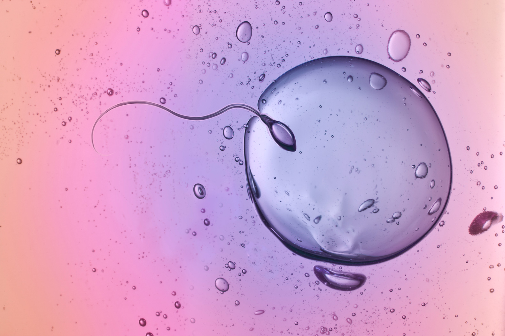
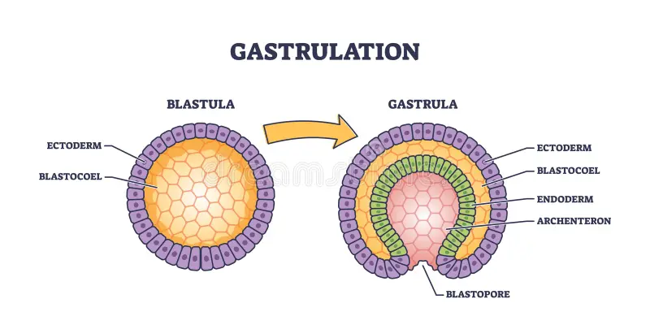
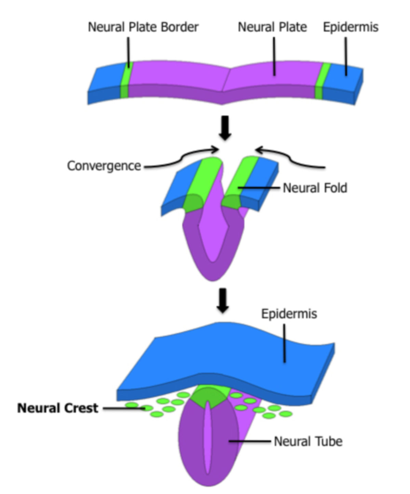
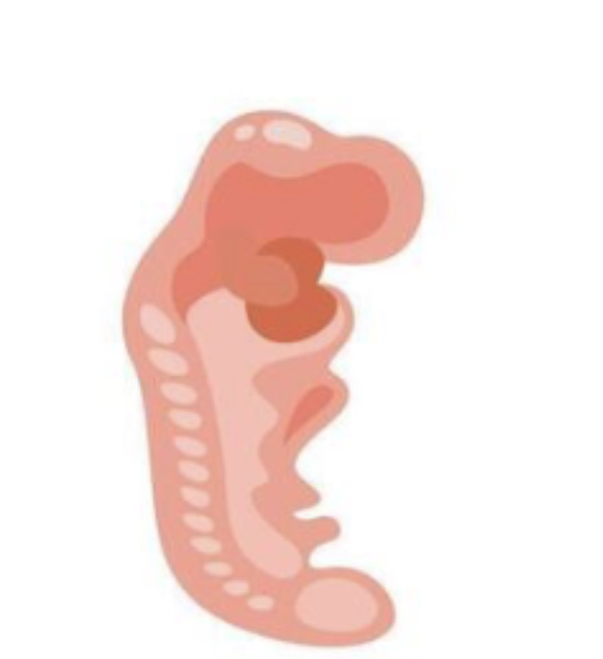
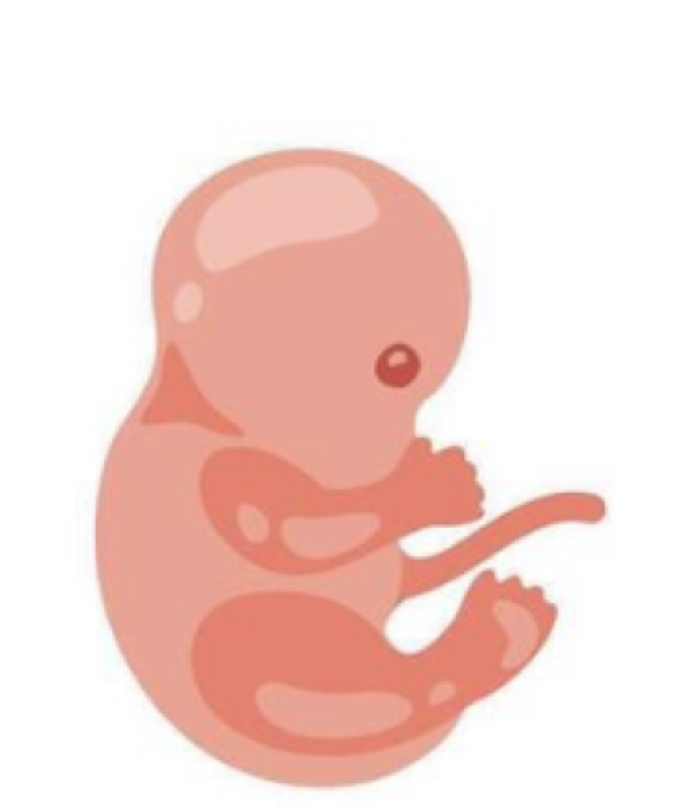
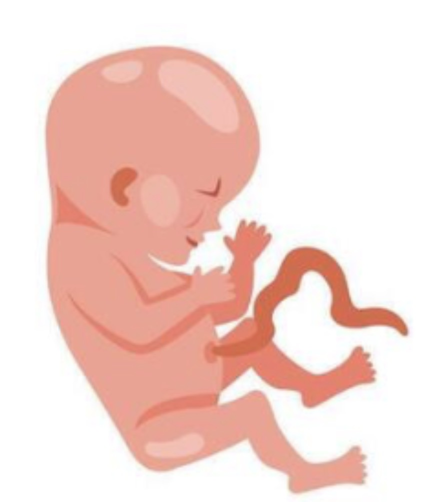
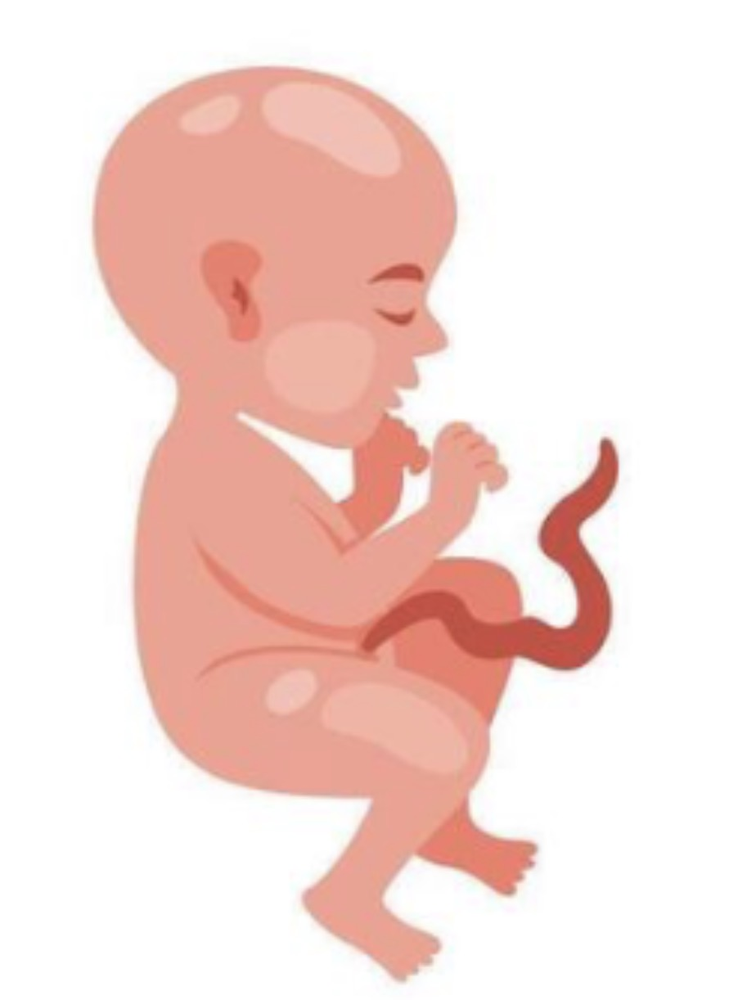

Befruchtung & Einnistung
Alles beginnt mit einem einzigen Moment: Ein Spermium dringt in die Eizelle ein – die Zygote entsteht. In diesem Moment ist bereits festgelegt, welche Chromosomenkombination der neue Mensch trägt, und damit auch das chromosomale Geschlecht.
Die Zygote teilt sich auf dem Weg durch den Eileiter rasend schnell: Zunächst zur Morula (solider Zellhaufen), dann zur Blastula (hohle Kugel mit Flüssigkeit). Etwa am 6.–7. Tag nistet sich die Blastula in die Gebärmutterschleimhaut ein – die Implantation. Gelingt sie nicht, endet die Schwangerschaft unbemerkt.
In dieser frühen Phase gilt das „Alles-oder-Nichts-Prinzip": Schädigungen führen entweder zum vollständigen Absterben oder werden vollständig repariert. Fehlbildungen entstehen hier noch nicht.
Was kann schiefgehen?
Risiken dieser PhaseIn SSW 1–2 ist der Embryo noch sehr widerstandsfähig – Fehlbildungen entstehen hier nicht. Dafür ist das Risiko eines unerkannten Schwangerschaftsverlustes hoch, wenn die Einnistung scheitert.
Implantationsversagen
EntwicklungDie Blastula nistet sich nicht oder nicht vollständig in die Gebärmutterschleimhaut ein. Die Schwangerschaft endet, oft ohne dass die Frau es bemerkt. Ursachen: Hormonmangel, schlechte Schleimhautqualität oder chromosomale Fehler im Embryo.
Extrauteringravidität
EntwicklungDie Eizelle nistet sich außerhalb der Gebärmutter ein – meist im Eileiter (Eileiterschwangerschaft). Medizinischer Notfall: Der Embryo kann dort nicht überleben, und der wachsende Trophoblast kann den Eileiter zum Platzen bringen.
Frühe Chromosomenfehler
GenetischFehler bei der Meiose oder den ersten Zellteilungen führen zu Trisomien oder Monosomien. Viele dieser Embryonen werden spontan abgestoßen. Nur wenige, wie Trisomie 21, sind mit dem Leben vereinbar.

Gastrulation – drei Keimblätter entstehen
In der 3. Woche beginnt die eigentliche embryonale Entwicklung. Die Zellen des Embryos ordnen sich neu und bilden die drei Keimblätter – die Baupläne aller späteren Gewebe und Organe.
Ektoderm (äußeres Blatt): Haut, Nervensystem, Sinnesorgane.
Mesoderm (mittleres Blatt): Muskeln, Knochen, Herz-Kreislauf-System, Nieren.
Endoderm (inneres Blatt): Verdauungstrakt, Lunge, Leber, Bauchspeicheldrüse.
Dieser Schritt ist irreversibel: Was als Ektoderm angelegt ist, wird niemals Darm. Die Differenzierung der Zellen beginnt – und damit auch die Verwundbarkeit des Embryos gegenüber äußeren Schädigungen.
Was kann schiefgehen?
Kritische Phase beginntAb SSW 3 beginnt die kritische Periode der Embryonalentwicklung. Störungen können jetzt zu dauerhaften Fehlbildungen führen, weil die Grundstruktur des Körpers angelegt wird.
Sirenomelie
EntwicklungSchwere Fehlbildung des Mesoderms: Die Beine des Embryos verwachsen zu einem einzigen Gliedmaß. Extrem selten (1 : 100.000), meist nicht mit dem Leben vereinbar. Ursache: Störung der Achsenentwicklung in der Gastrulation.
Toxoplasmose (frühe Infektion)
InfektionInfektion der Mutter mit Toxoplasma gondii (Parasit, v.a. aus Katzenkot oder rohem Fleisch). Übertragung auf den Embryo in ca. 25 % der Fälle. Eine Infektion im 1. Trimester ist besonders schwerwiegend.
Alkohol (Teratogen)
SuchtmittelAlkohol ist im gesamten Verlauf der Schwangerschaft teratogen – also entwicklungsschädigend. Es gibt keine nachgewiesene sichere Menge. In SSW 3 kann er die Keimblätterbildung direkt stören.

Neurulation – das Nervensystem entsteht
Das Ektoderm faltet sich an der Rückseite des Embryos zur Neuralplatte, die sich anschließend zum Neuralrohr schließt – dem Vorläufer von Gehirn und Rückenmark. Dieser Prozess muss bis zum 28. Tag abgeschlossen sein.
Gleichzeitig beginnt das Herz zu schlagen: In SSW 4 entsteht das erste Herzflimmern – noch bevor der Embryo auch nur 5 mm groß ist. Der Körper faltet sich räumlich und gliedert sich in Kopf, Rumpf und die Anlagen der Gliedmaßen.
Diese Phase ist besonders kritisch, weil viele Frauen noch gar nicht wissen, dass sie schwanger sind – und dennoch schon teratogene Einflüsse wirken können.
Was kann schiefgehen?
Neuralrohr-DefekteSchließt sich das Neuralrohr nicht vollständig, entstehen Neuralrohrdefekte – darunter einige der häufigsten schwerwiegenden Fehlbildungen. Folsäuremangel ist der wichtigste Risikofaktor.
Spina bifida
EntwicklungDas Neuralrohr schließt sich im unteren Bereich nicht vollständig – Wirbelsäule und Rückenmark liegen teilweise offen. Häufigste Variante: Meningomyelozele (Rückenmark tritt aus). Folgen: Lähmungen, Blasen- und Darmfunktionsstörungen.
Anenzephalie
EntwicklungDas Neuralrohr schließt sich am oberen Ende nicht – Großhirn und Schädeldecke entwickeln sich nicht. Anenzephalie ist nicht mit dem Leben vereinbar. Betroffene Kinder werden tot geboren oder sterben kurz nach der Geburt.
Contergan / Thalidomid
MedikamentDas Schlafmittel Contergan (Thalidomid) wurde in den 1950er Jahren rezeptfrei verkauft. Eine Einnahme in SSW 3–6 führte zu schweren Extremitätenfehlbildungen (Thalidomid-Embryopathie): Robbengliedrigkeit (Phokomelie), fehlende Arme oder Beine.
Varizella-Zoster (Windpocken)
InfektionEine Primärinfektion der Mutter mit dem Varizella-Zoster-Virus in der Frühschwangerschaft kann zu kongenitaler Varizella-Embryopathie führen. Nicht jede Infektion überträgt sich – etwa jede 8.–9. Infektion betrifft den Embryo.

Organogenese I – die Organe nehmen Form an
Dies ist die sensibelste Phase der gesamten Embryonalentwicklung. Alle lebenswichtigen Organe werden gleichzeitig angelegt. In SSW 4–6 entstehen in rasanter Geschwindigkeit: Herzanlage (und erste Kontraktionen), Anlage von Leber, Lunge und Bauchspeicheldrüse, erste Nierentubuli, Augen- und Ohrbläschen sowie die Extremitätenknospen – die späteren Arme und Beine.
Der Embryo ist in dieser Phase nur 4–8 mm groß, gleicht aber bereits entfernt einem menschlichen Wesen. Das Gesicht formt sich: Nasen-, Mund- und Augenanlagen werden sichtbar.
Jedes Organ hat seine eigene sensible Phase – die Zeitspanne, in der es am anfälligsten für Schädigungen ist. Schäden in dieser Zeit sind kaum reparierbar.
Was kann schiefgehen?
Höchstes FehlbildungsrisikoSSW 4–6 ist die Phase mit dem höchsten Fehlbildungsrisiko. Nahezu jedes Organ, das jetzt angelegt wird, kann durch Infektionen, Medikamente oder andere Noxen fehlerhaft entstehen.
Herzfehler (kongenital)
EntwicklungAngeborene Herzfehler sind die häufigsten schweren Fehlbildungen (ca. 1 % aller Geburten). Sie entstehen, wenn die Herzanlage in SSW 4–6 gestört wird. Formen: Ventrikelseptumdefekt (Loch in der Herzwand), Fallot-Tetralogie, Transposition der großen Gefäße.
Lippenspalte / Gaumenspalte
EntwicklungHäufige Fehlbildung (1 : 500–700 Geburten): Die Gesichtsfortsätze verwachsen nicht vollständig. Ursachen: genetisch + Umweltfaktoren (Folsäuremangel, Rauchen, Alkohol, bestimmte Medikamente wie Antiepileptika).
Röteln-Embryopathie
InfektionRöteln-Infektion der Mutter vor SSW 12 → Gregg-Syndrom: Taubheit, Herzfehler, Katarakt (Linsentrübung), geistige Behinderung. Vor der Impfära war dies eine der häufigsten Ursachen schwerer Fehlbildungen. Heute in Deutschland durch Impfung selten.
Kokain-Exposition
SuchtmittelKokain verursacht Vasokonstriktion (Gefäßverengung) in der Plazenta → verminderter Blutfluss zum Embryo. Folgen: Herzfehler, Extremitätenfehlbildungen durch lokale Durchblutungsstörungen, Spontanaborte.

Organogenese II – Feinarbeit & Abschluss
In SSW 6–8 werden die angelegten Organe weiter differenziert. Der Embryo wächst auf etwa 2–3 cm – und sieht jetzt deutlich menschlicher aus. Finger und Zehen bilden sich durch programmierten Zelltod (Apoptose) heraus. Die Gesichtszüge werden klarer.
Das Geschlecht differenziert sich ab SSW 6 (gonadal) und bis SSW 9 (äußere Merkmale). Die Geschlechtsdifferenzierung hängt vom SRY-Gen und dem Hormonmilieu ab.
Am Ende von SSW 8 ist die Embryonalperiode abgeschlossen. Ab SSW 9 spricht man vom Fötus. Das Fehlbildungsrisiko sinkt, weil alle Organe grundsätzlich angelegt sind – es geht nun hauptsächlich um Wachstum und Reifung.
Was kann schiefgehen?
Embryopathien bis SSW 10Embryopathien – Fehlbildungen durch externe Schädigungen – entstehen definitionsgemäß bis zur 10. Schwangerschaftswoche. Sie führen nicht zur Fehlgeburt, sondern das Kind kommt mit Fehlbildungen zur Welt.
Syndaktylie / Polydaktylie
EntwicklungWenn die Apoptose zwischen den Fingern nicht vollständig abläuft, bleiben Finger verwachsen (Syndaktylie). Bei zu viel Apoptose an falscher Stelle oder zu wenig: überzählige Finger (Polydaktylie). Meist genetisch, teils durch Teratogene.
Lues / Syphilis
InfektionDer Erreger Treponema pallidum kann den Fötus ab ca. SSW 20 infizieren – über die Plazenta oder während der Geburt. Unbehandelt: erhöhtes Risiko für Spontanaborte, Totgeburten, Frühgeburtlichkeit, Hydrops fetalis.
Warfarin-Embryopathie
MedikamentDer Blutgerinnungshemmer Warfarin ist im 1. Trimenon teratogen. Folgen: Nasenhypoplasie (unterentwickelte Nase), Knochenpunktierung, Wachstumsverzögerung, in schweren Fällen ZNS-Schäden. In der Schwangerschaft wird stattdessen Heparin eingesetzt, da es nicht plazentagängig ist.
Parvovirus B19 (Ringelröteln)
InfektionRingelröteln bei der Mutter sind für sie selbst mild (Schmetterlings-Erythem im Gesicht, grippeähnliche Symptome). Beim Embryo/Fötus können sie jedoch zu Hydrops fetalis führen – einer lebensbedrohlichen Flüssigkeitsansammlung im Körper.

Fetalperiode I – Wachstum & erste Funktionen
Mit SSW 9 ist der Embryo zum Fötus geworden. Die größten Gefahren für Fehlbildungen sind überstanden – jetzt stehen Wachstum und funktionale Reifung im Vordergrund. Der Fötus ist am Ende von SSW 12 etwa 7–8 cm groß und wiegt ca. 20 g.
Wichtige Entwicklungen: Die Hoden sind bei männlichen Feten vollständig funktionsfähig und produzieren Testosteron. Eierstöcke beginnen mit der Östrogenproduktion. Äußere Geschlechtsmerkmale werden ab SSW 9 unterscheidbar, sind aber per Ultraschall meist erst ab SSW 12 erkennbar.
Der Fötus bewegt sich bereits aktiv – die Mutter spürt es aber noch nicht. Die Plazenta übernimmt nun vollständig die Versorgung. Das Risiko einer Fehlgeburt sinkt drastisch – deshalb geben die meisten Paare die Schwangerschaft erst jetzt bekannt.
Was kann schiefgehen?
FetopathienAb SSW 9 spricht man von Fetopathien statt Embryopathien – die Organe sind angelegt, können aber in ihrer Funktion und ihrem Wachstum gestört werden. Manche Infektionserreger werden erst ab SSW 20 gefährlich.
Trisomie 21 (Down-Syndrom)
GenetischEin drittes Chromosom 21 – entstanden durch Fehler in der Meiose. Häufigste lebensfähige Chromosomenstörung (1 : 700 Geburten). Ersttrimester-Screening (Nackenfaltenmessung + Bluttest) kann auf erhöhtes Risiko hinweisen.
Amphetamin-Exposition
SuchtmittelAmphetamine (Speed, Crystal Meth) haben langfristige, subtile Auswirkungen auf Hirnstruktur und -funktion des Fötus. Studien zeigen Veränderungen in Aufmerksamkeit und Impulskontrolle. Genaue Langzeitfolgen sind noch nicht vollständig erforscht.
Intrauterine Wachstumsretardierung (IUGR)
WachstumDas Kind wächst im Mutterleib langsamer als erwartet. Ursachen: Plazentainsuffizienz, Infektionen (z.B. Toxoplasmose), Rauchen, Unterernährung. Folgen: niedrigeres Geburtsgewicht, erhöhtes Risiko für spätere Herz-Kreislauf-Erkrankungen.
Opiat-Exposition
SuchtmittelNeugeborene opiatabhängiger Mütter zeigen nach der Geburt ein Neonatales Abstinenzsyndrom (NAS): Zittern, Reizbarkeit, Trinkschwäche, Krampfanfälle. Behandlung: kontrollierte Dosierung von Morphin oder Methadon, langsam ausgeschlichen.

Fetalperiode II – Reifung bis zur Geburt
Das zweite und dritte Trimenon stehen ganz im Zeichen des Wachstums und der funktionalen Reifung. Alle Organe sind angelegt – sie müssen jetzt wachsen, sich vernetzen und ihre Aufgaben übernehmen.
Ab SSW 20 beginnt die Mutter die Kindsbewegungen zu spüren. Das Gehirn wächst rasant: Die charakteristischen Hirnfurchen (Gyrifikation) entstehen zwischen SSW 24–34. Die Lunge – das letzte Organ, das ausgereift wird – produziert ab SSW 24 Surfactant (notwendig zum Atmen nach der Geburt).
Ab SSW 22–24 gilt der Fötus als bedingt lebensfähig – mit intensivmedizinischer Betreuung. Ab SSW 37 ist die Schwangerschaft termingerecht. In dieser langen Phase sind schwerwiegende Fehlbildungen seltener, aber andere Risiken wie Wachstumsstörungen und Frühgeburt treten in den Vordergrund.
Was kann schiefgehen?
SpätrisikenIm 2. und 3. Trimenon sind klassische Fehlbildungen seltener, aber Infektionen, Suchtmittel und andere Noxen können weiterhin ernsthafte Folgen haben – besonders für Gehirn, Lunge und die allgemeine Reifung.
Fetales Alkoholsyndrom (FAS)
SuchtmittelAlkohol schädigt das fetale Gehirn in jeder Schwangerschaftswoche. Im 2./3. Trimenon betrifft es vor allem die Gehirnreifung und die Vernetzung der Neuronen. FAS ist die häufigste vermeidbare Ursache für geistige Behinderung weltweit.
Kongenitale Toxoplasmose (spät)
InfektionEine Toxoplasma-Infektion im 2./3. Trimenon überträgt sich häufiger auf das Kind, ist aber oft weniger schwerwiegend als im 1. Trimenon. Typische Spätfolgen: okuläre Anomalien (Augenentzündungen, die erst im Jugend- oder Erwachsenenalter auftreten können).
Frühgeburt
WachstumGeburt vor SSW 37. Risikofaktoren: Infektionen, Mehrlingsschwangerschaften, Stress, Rauchen, kurzer Gebärmutterhals. Frühgeborene vor SSW 28 haben erhöhtes Risiko für Atemnotsyndrom (fehlender Surfactant), Hirnblutungen und Langzeitbeeinträchtigungen.
Barbiturate / Sedativa
MedikamentBarbiturate (Beruhigungs- und Schlafmittel) in der Spätschwangerschaft können zum neonatalen Drogenentzug führen: Zittern, Reizbarkeit, Unruhe beim Neugeborenen. Behandlung: kontrollierte Sedierung mit Phenobarbital, die langsam ausgeschlichen wird.
Hydrops fetalis
KomplikationLebensbedrohliche Flüssigkeitsansammlung in fetalen Kompartimenten (Bauchraum, Brustkorb, Haut). Ursachen: Parvovirus B19, Herzfehler, Rhesus-Inkompatibilität, Chromosomenstörungen. Behandlung: intrauterine Bluttransfusion oder frühzeitige Entbindung.
Rauchen in der Schwangerschaft
SuchtmittelNikotin und Kohlenmonoxid verengen die Blutgefäße der Plazenta und reduzieren die Sauerstoffversorgung des Fötus. Folgen: IUGR, niedrigeres Geburtsgewicht, erhöhtes Risiko für plötzlichen Kindstod (SIDS) und spätere Atemwegserkrankungen.